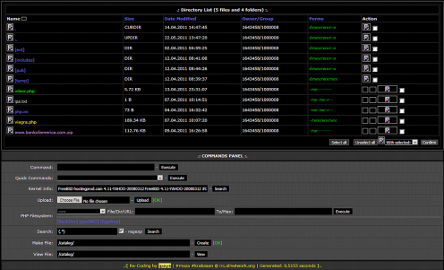

Touchanalytics
Authentication via Touchscreen usage
Using machine learning and touchscreen data collected from various subjects to successfully identify and authenticate a user on an Android phone
Currently working to expand the previous research done in the paper below
See Paper
Analyzing WebView Vulnerabilities in Android Applications
Worked on performing a large scale measurement study to determine how many Android applications may be vulnerable to malicious websites that a user may access while browsing the web
Developed a tool to determine whether a user can navigate away from a designated webpage and land on a potentially malicious third-party site
Classifying Android Applications by GUI Feature Extraction
Worked in a group of five students to classify Android applications based on GUI features which were extracted from a set of more than 1000 applications
See Paper

Web Application Vulnerabilities
Working with Imperva's Application DEfense Center, observed and categorized attacks across 30 applications as well as onion router tragiic, monitoring more than 10 million individual attacks targeted at web applications
Used statistical tools and data mining methods to find patterns in the indetified web attacks"
Contributing author in Imperva's Web Application Attack Report
See Paper